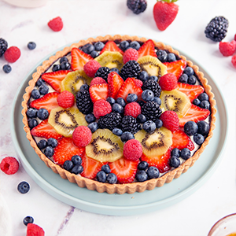

Mary Louise Grace Couhault & JC781631
This project is about making a sustainable website that helps Petite Treats Bakery
market their australian baked bakery selection to current customers,and to also attract new customers.
The site is needed to target online customers to look at their bakery and then come to their
establishment, as well as to show current customers their updated discount lists.
The Goal of this website attract new customers and help regular customers see new items and get
updates on specials.Thus helping to increase revenenue and customer walkings by atleast 40%. Including
online marketing will allow the store to reach more clients than that of word of mouth. The home screen
also needs to include a functioning subcription button which will enable users to sign up for a weekly news
letter which will detail new items as well as what items are now for sales
. It should then reprint the users input and validate their inputs.
Other Advertising will be consistent for a period of 3 months (except for including the new web site)
,so that any increase in sales should be attributed to the site. At the end of this 3 month period,
(and during), the number of new customers will be counted and compared to the previous 3 months.
The owners of Petite Treats would like to target people of all ages, however, they would like to
attract young families and young people, possibly around the age of 17 to 35, to the bakery. The design
will be bright and with a color pallet that will stand out to appeal to younger clients.
Donut - Menu, SpecialsPage
Custard Tart - Home Page, Menu, SpecialsPage

Vanilla Slice - Menu
Apple Cake - Home Page, Menu, SpecialsPage
RasberryCheese Cake - Home Page, Menu

Randy Tart - Menu, SpecialsPage

Fruit Tart - Menu

Bakery Image - Home Page
Owner Image - About Us
Location - About Us
Baker Image - About Us
Subscription Reprint Page
Form Signup
I chose this text as it is a commonly used text for websites and easily readable. Thus keeping potential clients and browsers on the website for a longer duration and possibly peaking their interest in the website
I chose font size 1.5em for my headers as I wanted them to be easily read and quick to understand
This was chosen as it was rated one of the easiest fonts to read and the most used on most websites
This was my color of choice as it was the easiest color to read out of all the colors
I chose this color for my text as it stood out nicely against my white background and added to the sleekness of the webpage
I chose to make this section of text white as it made a lovely contrast against the brown around made it easier to read.
The Footer Text is white, as it contrasts the light brown background of the Footer. Thus allowing for it to be read easier.
My home page has a 2 image galleries of all the products sold at the bakery. It also features quotes from clients
that really enjoyed their service. It also feautres a sign up button that links to the sites sign up form.
This page features a form that allows clients to sign up for a subscription page that sends them weekly newsletters. I chose
to put the sign up button on the first page as a way to attract new clients, and I used the image gallery as a way to peek interest and keep
people on the page longer.
This page features a image gallery of the individual products sold, it also includes clickable images that like
to the individual items own pages. Each item has its own price listed to make ordering easier. These elements were key parts to making the page fun and aesthetically pleasing, and also minimalistic.
In this page I made a small image gallery and listed each of the items current and normal prices to show the clients the discounted price,
each of these images also link back to their own pages as I wanted the clients to be able to order more items if needed. I also included the sign up
button here again incase the clients wanted to sign up when seeing our current specials.
For this page, I included the pictures of the owner, the baker and a picture at the locaiton. I did this to give faces to behind the business to make the bakery seem more friendly
I also added the picture of someone at the bakery as I wanted to give it a friendly view that univeristy students could go and hang out there
possibly providing another reason for the university students to come to the bakery and order new things.
I chose these questions as I wanted to check the all around usability and aesthetics of the website.